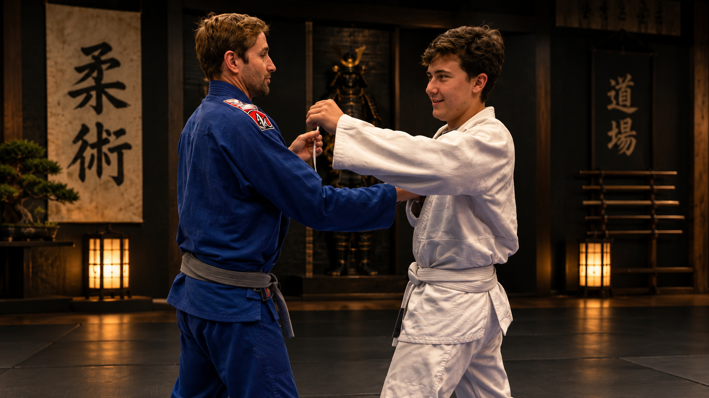
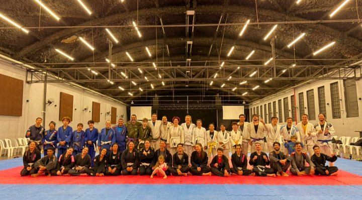
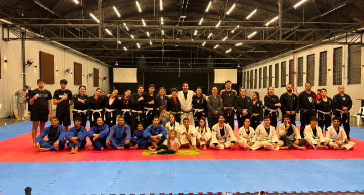

A minha história de superação no esporte

Em 2025, descobri o Jiu-Jitsu na igreja, pelo projeto MDL (Ministério das Lutas), com o mestre Dedé. Eu queria só experimentar e acabei encontrando um esporte que eu amo praticar.
Comecei sem kimono, treinando com roupa de esporte, e acabava rasgando tudo.
No tatame fiz amizades que fazem o treino valer ainda mais: Gabriel, Daniel, Adauto e outros companheiros.
No começo você só apanha. Aos poucos o corpo aprende, e o dia do meu primeiro grau veio com a sensação de trabalho bem feito.
Para mim, o Jiu-Jitsu representa esforço, uma imagem melhor de mim mesmo e a humildade de ser sempre aprendiz. E, acima de tudo, o prazer de praticar um esporte de que eu gosto.

O Jiu-Jitsu me mostrou que o verdadeiro desafio não está no adversário, mas em mim mesmo.

Aquele primeiro contato com o tatame foi diferente de tudo.
FASE 01 - Descoberta
A disciplina me traz de volta ao tatame e supera a desmotivação quando o desânimo aparece.
FASE 02 - Processo
O tatame me ensina a lidar com os erros e os desconfortos, ombro na cara.
FASE 03 - Resiliência
Na medida do meu ritmo, conforme a rotina muda, a prática cessa, mas a forma como eu encaro a vida já é diferente.
FASE 04 - VidaSua vida muda, você aprende a lidar com o desconforto, aprende a lidar com pressão e, mais do que isso, faz amizades, treina o corpo, a mente e sempre vai estar preparado para se defender!
Se você quer sentir isso na pele, tenha sua vida mudada, cadastre-se no templo!
Cadastre-se! OSS